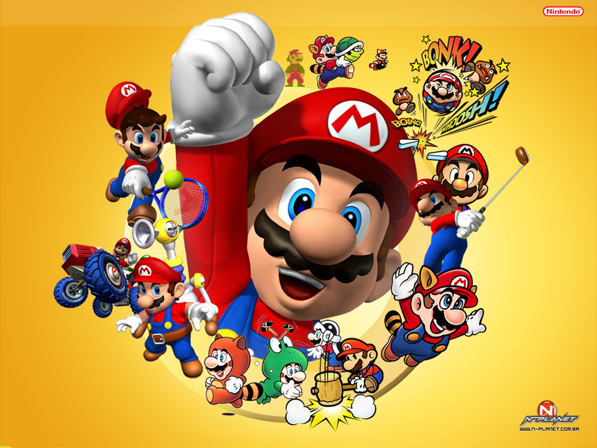

There is a student named Jerry. Jerry lives in a small house in the forest, and he went into the forest. Jerry does not want to be in the forest; he wants to play videogames, but he doesn't have any videogames because he's in the forest.
Kobe Bryant has a videogame. He has Mario, and he does not want to go to the forest because it is too big. He prefers to play videogames at home. But Kobe Bryant is so ~nice~! He goes to the forest, even though it is so big, because he wants to give Mario to Jerry. He goes to the forest, even though it is so big, because he wants to give Mario to Jerry. Jerry loves Mario because it is an excellent game. Jerry gives Kobe a bottle of wine to say thanks.